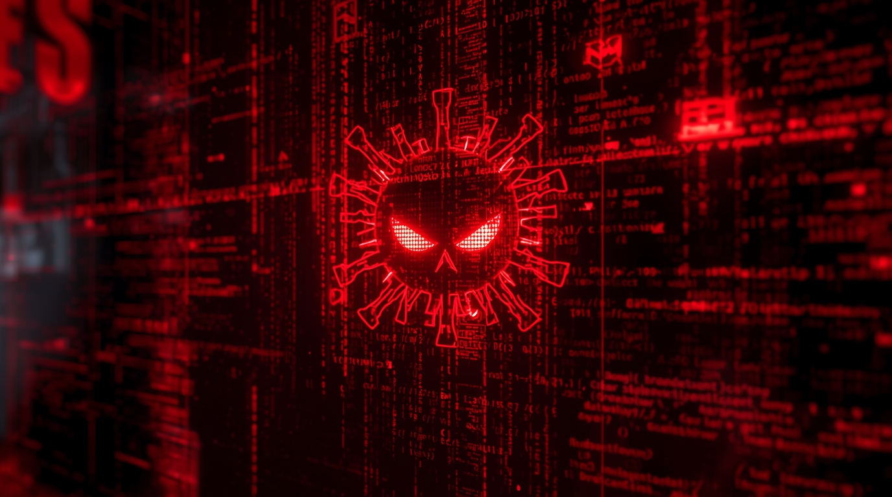

Storybook CyberQuest
DataShield Chronicles
Capitolo 1L'Accesso

La prima volta che Elios Varen entrò nel cyberspazio, non fu per scelta, ma per necessità. Era una notte di novembre, e la città dormiva sotto un manto di luci al neon. Nel suo piccolo appartamento, circondato da schermi che illuminavano l'oscurità, Elios digitò l'ultimo comando. Il mondo fisico svanì. Si ritrovò in un universo fatto di codice puro, dove i dati scorrevano come fiumi luminosi e le architetture digitali si ergevano come cattedrali di luce. Era dentro. Era DataShield. E da quel momento, nulla sarebbe più stato lo stesso. Il suo corpo rimase immobile sulla sedia, ma la sua coscienza navigava attraverso firewall e protocolli di sicurezza, esplorando le profondità infinite della rete. Ogni bit di informazione pulsava di vita propria, ogni database nascondeva segreti che attendevano di essere scoperti. Elios capì subito che questo nuovo mondo aveva le sue regole, i suoi pericoli, e le sue opportunità. Era l'inizio di una missione che avrebbe definito il suo destino.
Capitolo 2Il Virus Dormiente
Settimane dopo il suo primo accesso, DataShield scoprì qualcosa di inquietante nei meandri di un server governativo. Un codice anomalo, silenzioso, quasi invisibile. Era un virus dormiente, progettato per attivarsi in un momento preciso e causare il caos su scala globale. Il malware era sofisticato, nascosto tra milioni di righe di codice legittimo, come un predatore mimetizzato nella giungla digitale. Elios iniziò a tracciare la sua origine, seguendo frammenti di codice attraverso proxy e nodi anonimi. Ogni indizio lo portava più in profondità in una rete oscura di cybercriminali. Ma più si avvicinava alla verità, più il virus sembrava essere consapevole della sua presenza. Gli attacchi iniziarono: denial-of-service, trojan, phishing mirato. Qualcuno voleva fermarlo. DataShield capì che non stava solo cacciando un virus, ma combattendo contro un'intelligenza che aveva imparato a difendersi. La minaccia era reale, e il tempo stava per scadere. Doveva agire, e in fretta, prima che il virus si risvegliasse e trasformasse il mondo digitale in un campo di battaglia.
Capitolo 3La Rete Infranta
Durante le sue indagini, DataShield si imbatté in un dilemma che avrebbe scosso le fondamenta della sua missione. Scoprì che il virus non era solo un'arma di distruzione, ma anche una chiave. Una chiave che avrebbe potuto sbloccare database governativi contenenti prove di corruzione, abusi di potere e ingiustizie nascoste al pubblico. Eliminare il virus significava proteggere il sistema, ma anche seppellire la verità. Lasciarlo attivo, invece, avrebbe esposto i colpevoli ma causato danni irreparabili a milioni di innocenti. Elios si trovò di fronte a una scelta impossibile: essere l'eroe che protegge l'ordine, o il ribelle che espone la corruzione a qualsiasi costo? Le notti divennero interminabili. I suoi principi erano chiari, ma la realtà era grigia. Consultò le sue fonti, parlò con alleati nel deep web, ma nessuno poteva dargli la risposta. La rete che aveva giurato di proteggere era infranta, non dal virus, ma dalle persone che l'avevano costruita con bugie. DataShield capì che non bastava essere un guardiano digitale; doveva diventare qualcosa di più. Doveva essere giusto, anche quando giustizia e protezione non coincidevano più.
Capitolo 4Il Codice del Cuore
La svolta arrivò quando DataShield scoprì la vera identità del creatore del virus: era Aria, la sua mentore, colei che gli aveva insegnato tutto sul cyberspazio. Il tradimento lo colpì come una scarica elettrica nel codice. Aria non era una criminale comune; aveva creato il virus per una ragione precisa. Anni prima, suo fratello era morto a causa di un errore medico coperto da documenti falsificati e protetti da firewall governativi. Il virus era la sua vendetta, il suo modo di costringere il sistema a rispondere delle proprie colpe. Elios la affrontò in un incontro virtuale, in un nodo isolato del cyberspazio dove solo loro due potevano comunicare. Le parole furono poche ma cariche di emozione. "Hai tradito tutto ciò che ti ho insegnato," le disse. "No," rispose Aria, "ti ho insegnato a cercare la verità. Ora devi decidere cosa farne." Il codice del cuore di Elios era lacerato. Comprese che la giustizia non è mai bianca o nera, ma un mosaico complesso di scelte dolorose. Doveva fermare Aria, ma anche onorare la verità che lei aveva portato alla luce. Era arrivato il momento della decisione finale.
Capitolo 5Il Firewall Finale
DataShield prese la sua decisione. Non avrebbe distrutto completamente il virus, né lasciato che devastasse il sistema. Invece, riprogrammò il codice, trasformandolo in uno strumento di trasparenza controllata. Il virus rilasciò le prove di corruzione in modo graduale, permettendo alle autorità competenti di investigare senza causare il collasso del sistema. Non fu una soluzione perfetta, ma fu giusta. Aria venne arrestata, ma i suoi sacrifici non furono vani. Le informazioni che emersero portarono a riforme significative e all'incriminazione di decine di funzionari corrotti. Elios capì che essere un eroe non significa sempre vincere in modo pulito, ma fare la cosa giusta anche quando costa tutto. Il suo firewall finale non fu fatto di codice, ma di principi. Nel silenzio del suo appartamento, con le luci al neon della città che filtravano attraverso la finestra, DataShield si disconnesse dal cyberspazio. Il suo viaggio non era finito, ma aveva imparato una lezione fondamentale: la tecnologia è neutra, ma le scelte umane no. E ogni volta che entrava in rete, portava con sé quella verità.
La morale della storia: Nel mondo digitale come in quello reale, la vera forza di un eroe non sta nella capacità di distruggere il male, ma nella saggezza di comprendere che la giustizia richiede coraggio, compassione e la volontà di fare scelte difficili. La tecnologia può essere un'arma o uno strumento di liberazione: dipende dalle mani che la guidano e dal cuore che la comanda.
"Nel silenzio del codice, la verità è la mia arma più luminosa."
🔐 Cyber Security - Risorse Utili
Scopri di più sulla sicurezza informatica e proteggi il tuo mondo digitale:
📚 Cyber Security Insiders - Guide e Articoli 🎥 NetworkChuck - Video Tutorial sulla Sicurezza Informatica 🛡️ Kaspersky Resource Center - Minacce Informatiche 🌐 OWASP - Open Web Application Security Project